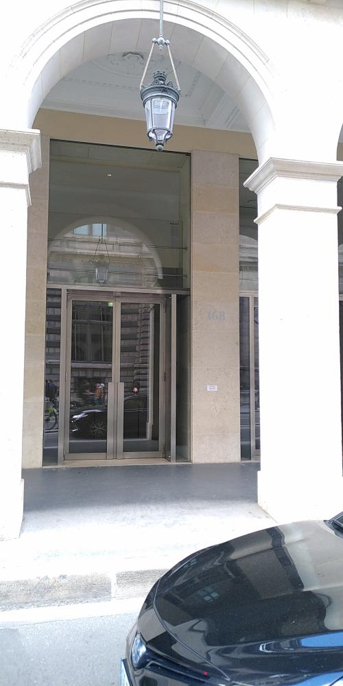
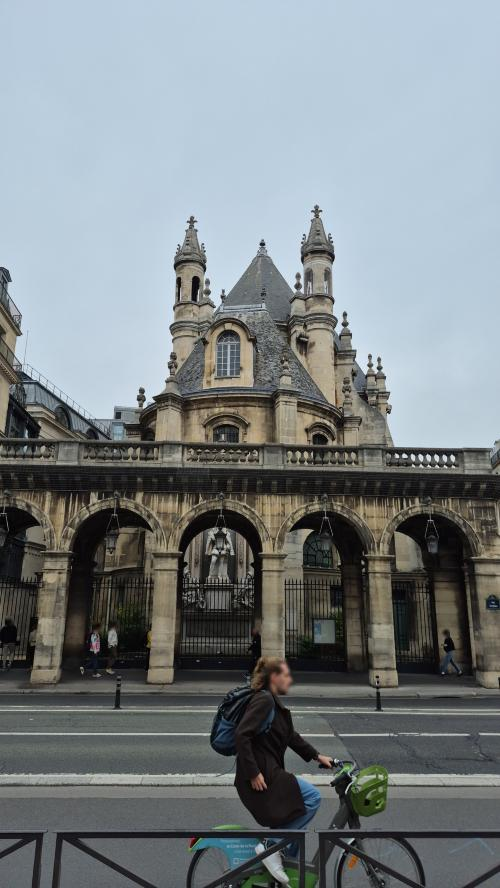
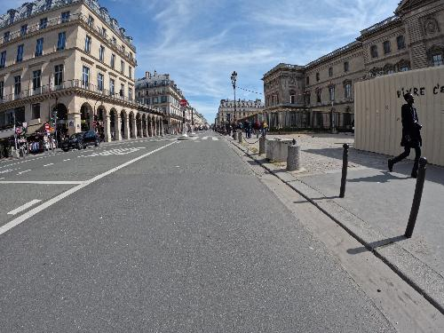
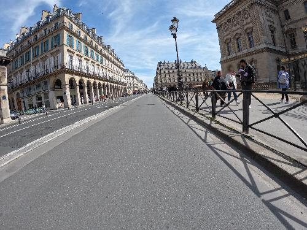
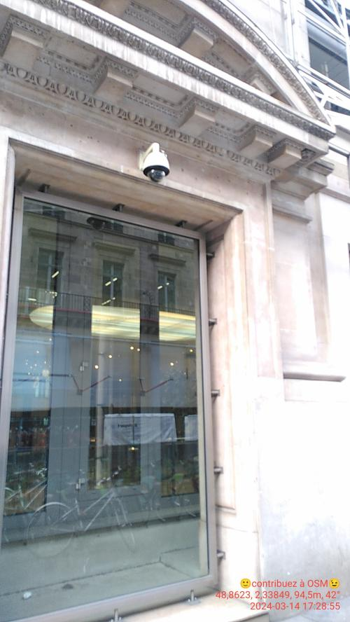
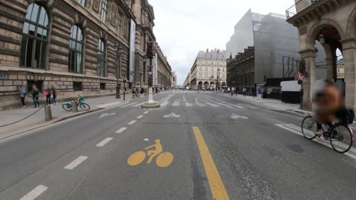

Only machine-screened preview images. Verify the exact building and facade visually before assigning any texture.

OSM building 53825316 — Unnamed
Photo 576b0f7d-fe28-4d84-94f9-c794cf5a43ca · 2.65 m from footprint · camera delta 3.89°
License: CC-BY-SA-4.0 · 2025-05-17T16:26:45.015394+00:00
OSM building · Panoramax metadata · HD source URL · local HD image
Identity is not yet verified; do not apply this image to a building.
OSM building 53825321 — Unnamed
Photo 5623438b-74ad-49c7-b314-8e3a513483a4 · 17.11 m from footprint · camera delta 6.16°
License: etalab-2.0 · 2025-10-10T11:57:41.429000+00:00
OSM building · Panoramax metadata · HD source URL · local HD image
Identity is not yet verified; do not apply this image to a building.
OSM building 53825315 — Unnamed
Photo 4e139104-7e1c-4ffc-959e-16ec898e2e48 · 25.06 m from footprint · camera delta 20.72°
License: etalab-2.0 · 2023-04-16T13:10:23+00:00
OSM building · Panoramax metadata · HD source URL · local HD image
Identity is not yet verified; do not apply this image to a building.
OSM building 53819659 — Unnamed
Photo f3f06fb4-744a-453e-b719-cf78522afb2c · 27.19 m from footprint · camera delta 18.95°
License: etalab-2.0 · 2023-04-16T13:10:32+00:00
OSM building · Panoramax metadata · HD source URL · local HD image
Identity is not yet verified; do not apply this image to a building.
OSM building 54046934 — Ministère de la Culture et de la Communication
Photo 69aa31bf-a17c-4100-b7f6-2b4805c10bc7 · 19.78 m from footprint · camera delta 19.31°
License: CC-BY-SA-4.0 · 2024-03-14T16:28:56.841665+00:00
OSM building · Panoramax metadata · HD source URL · local HD image
Identity is not yet verified; do not apply this image to a building.
OSM building 1476798118 — Unnamed
Photo a49b1d56-c7fc-4f74-b562-0a4b980c307e · 32.75 m from footprint · camera delta 22.22°
License: CC-BY-SA-4.0 · 2024-07-03T11:39:18.040000+00:00
OSM building · Panoramax metadata · HD source URL · local HD image
Identity is not yet verified; do not apply this image to a building.